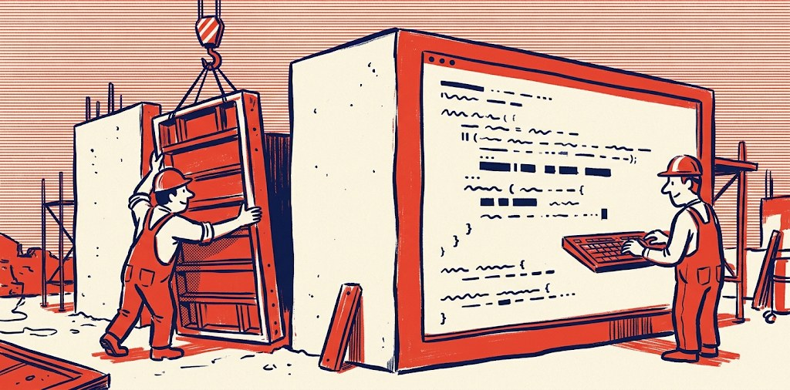

Intelligence artificielle
Une entreprise de construction doit-elle devenir une entreprise de tech ?

Grâce à l'intelligence artificielle, il n'a jamais été aussi simple de comprendre et surtout de faire : rédiger, programmer, calculer, concevoir, sans en avoir appris le métier. Vivre cette époque est une chance, une aubaine aussi incroyable que vertigineuse. C'est de cela que je veux parler, loin du récit hollywoodien et des alertes des collapsologues.
Je ne suis ni informaticien ni consultant. Je suis chargé d'études de prix, et depuis trois ans j'utilise ces outils tous les jours, au point de parler de « binge-prompting ». Personne ne m'a demandé d'écrire ; je le fais pour structurer ma pensée et la partager avec ceux que le sujet intéresse. Une série d'articles, qui n'engagent que moi.
1Une entreprise de construction doit-elle devenir une entreprise de tech ?
Aujourd'hui, un salarié passe 5 à 8 heures par jour sur des écrans professionnels (Outlook, Excel, Teams, facturation électronique…) : toute notre chaîne de valeur est numérisée. Sur les chantiers, AutoCAD, le BIM et les tablettes poussent même les métiers de terrain dans cette direction. Il est donc juste de dire qu'une grande partie des effectifs des entreprises de construction touche davantage un clavier qu'une banche.
Or les entreprises de construction se sont consolidées par des croissances externes et par le choix d'investir dans des actifs directement liés à l'acte de construire : matériel, immobilier, brevets. Une entreprise de construction sortirait-elle de son domaine si, demain, elle s'investissait davantage dans la tech ? Je ne le crois pas. S'ouvrir à la tech n'est pas une nouveauté, c'est la continuité de quelque chose qui s'installe déjà dans nos pratiques.
Le code, les mains de l'IA
Un modèle de langage ne fait qu'une seule chose depuis son lancement : prédire le mot suivant. C'est un cerveau qui sait beaucoup, mais un cerveau sans mains ne construit rien. Le code lui donne des mains. Par les commandes et les programmes, le modèle passe du savant qui sait à l'acteur qui fait : il accède à tout ce qu'un ordinateur peut faire. Toute automatisation, filtrer des mails, remplir un tableau, générer un dossier, créer une présentation, passe par cette main, même si l'utilisateur ne voit jamais une ligne de code. C'est pourquoi, à l'ère de l'IA, le levier le plus puissant ne sera pas la conversation mais le code.
Anthropic l'a compris en premier, avec Claude Code en février 2025, et c'est cette maîtrise du code qui l'a propulsé au premier rang, en le rendant « productif » ; Codex (OpenAI), Gemini CLI (Google), Mistral et les autres ont suivi. Le code est ainsi devenu le premier marché où l'IA a trouvé un modèle économique massif.
2Le coût du développement s'est effondré
J'en ai fait l'expérience moi-même : en deux semaines, sans difficulté, j'ai codé de zéro une version de Microsoft Project, dans un langage plus moderne, plus rapide, et surtout gratuit. Aujourd'hui, les entreprises paient des licences à des tiers pour des choses aussi triviales que générer des organigrammes. On peut donc s'attendre à ce que beaucoup de logiciels simples soient réécrits par les DSI elles-mêmes. L'industrie du logiciel est la première à en subir les conséquences : le secteur parle de « SaaSpocalypse », la crainte que l'IA générative détruise le modèle des logiciels par abonnement.
J'ai aussi fait le calcul : avec un forfait Claude Ultra à 180 € par mois, j'ai consommé en un mois ce qui m'aurait coûté 12 000 € en payant à l'usage, par l'API. Les fournisseurs d'IA, très largement subventionnés par les fonds de capital-risque, vendent donc aujourd'hui des abonnements au forfait, déconnectés de la consommation réelle.
« Le business actuel consiste à vendre 50 $ des billets de 100 $. »
Ainsi, en 2026, le coût et le temps de développement ont été réduits de deux ordres de grandeur : coder est devenu bon marché, et accessible à de simples initiés. Nous sommes dans une fenêtre qui, selon moi, ne durera pas sous cette forme : ces entreprises (OpenAI, Anthropic, Microsoft…), dont le business actuel consiste à vendre 50 $ des billets de 100 $, finiront par arrêter leurs offres à « forfaits », et nous entrerons dans l'ère des « budgets de tokens ».
3Ouvrir les vannes du développement interne
Ainsi, au-delà de « faire de l'IA », n'est-ce pas le moment, pour une entreprise de construction, de se doter de sa propre panoplie logicielle ? De quoi s'affranchir de certains fournisseurs, fluidifier les process des métiers (admin travaux, assistantes, achats…) et se donner des outils de pilotage à la mesure de nos activités (travaux, études, commerce…). Concrètement, cela veut dire deux choses : permettre aux salariés les plus demandeurs de créer leurs propres apps et outils, et laisser la DSI produire ce qu'elle a longtemps rangé dans la pile du « on verra demain, si on a les ressources ».
Comme cela a déjà été abordé par le COPIL, ouvrir les vannes ne veut pas dire que chacun code dans son coin. La DSI garde un rôle central, mais il change : elle devient garante de l'hébergement, de la sécurité et du cycle de vie des outils, plutôt que l'unique endroit où l'on pouvait les fabriquer.
Le ROI n'est pas prouvé. Mais quand l'investissement de départ est infime, le retour est rarement négatif.
C'est donc, selon moi, le moment de construire tout ce qu'on peut, tout en gardant à l'esprit qu'après l'ivresse du token illimité, il faudra se satisfaire du strict nécessaire. L'approche bottom-up qui a été expérimentée, où les besoins et les solutions viennent des usagers, me paraît le bon choix ; on peut, je crois, la pousser davantage. Et le format hackathon me semble le plus adapté pour garder une maîtrise et un arbitrage sur les projets à développer.
J'ai parlé ici de logiciel. Dans le prochain article, je parlerai de ce que l'IA changera dans nos process.